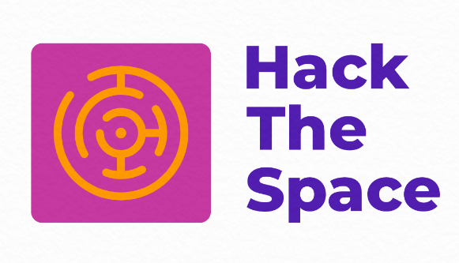

Safety Measures Against COVID19
Preventive Steps:
Wearing mask all time even if it means using Handmade mask, maintaining proper mask wearing etiquette techniques.
Maintaining Social distancing with others (i.e.2 feet or 6 gaj).
Covering faces while sneezing and coughing. The COVID-19 virus spreads primarily through droplets of saliva or discharge from the nose when an infected person coughs or sneezes, so it’s important that one should also practice.respiratory etiquette (for example, by coughing into a flexed elbow).
Standing within encirclement on the pavements, before the grocery stores and in shopping malls helps keeping social distancing while shopping.
Wearing face mask, face shield and protective glasses, gloves, protective clothing and shoes to avoid getting a direct contact with COVID19 affected patients or bearers while going out in case of emergencies.
Proper hand washing, cleaning with liquid soap and water for at least 20 seconds, sanitizing yourself with alcohol-based sanitizer regularly many times at least before eating foods. Do not touch eyes, nose and mouth with one’s hands as they may have the virus over them.
No social gatherings.
Lockdowns and Travel restrictions across the globe was conducted earlier to avoid community spread.
14 days of isolation was mandatory during home quarantine period upon arrival from abroad or containment zones or coming across the affected people and thorough monitoring check-up until the test results are negative confirmed of the person arrived.
Preventive measures should be taken correctly and strictly till now and near future and patients should take their medicines properly.